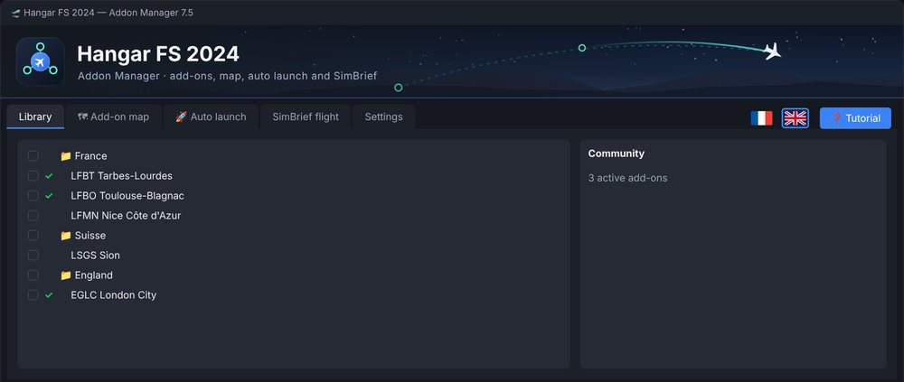
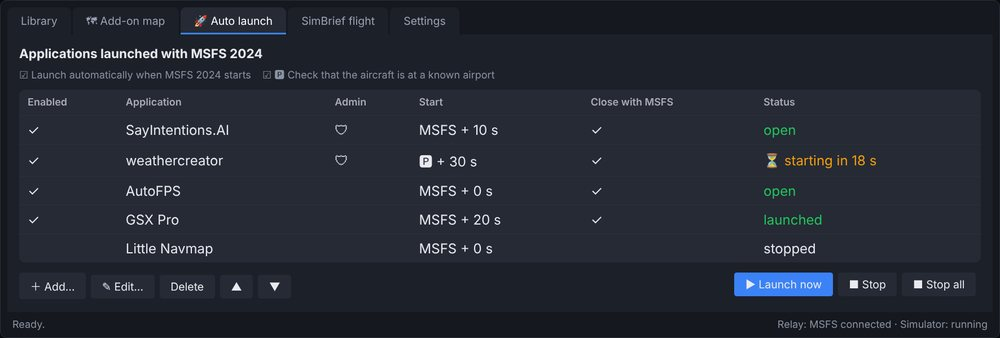
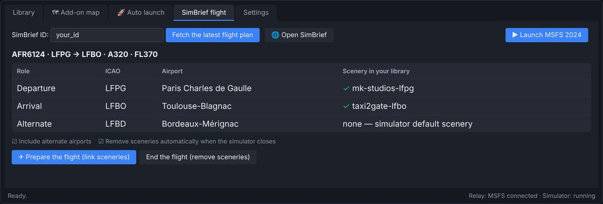
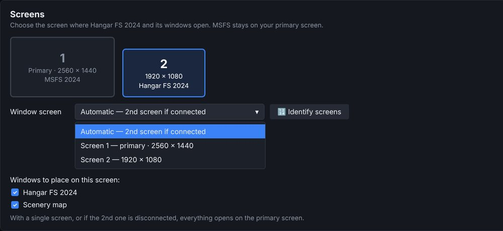

1. Overview and first launch
Hangar FS 2024 (Addon Manager) manages your MSFS 2024 add-ons without ever copying them: it creates simple links between your library and the Community folder, which you add or remove in one click. It also brings together a map of your sceneries, automatic launching of your apps, loading the sceneries of your SimBrief flight and a flight plan and tracking page.

What you need
- Windows 10 or 11: the app is a ready-to-use folder, nothing else to install. It is written in C# and uses components already built into Windows (.NET Framework 4.8 and Edge's WebView2 display engine). The
Hangar FS 2024.exeprogram passes VirusTotal without any alert (0 detections, Microsoft Defender included). - A "library" folder where you keep your add-ons, outside Community (for example
D:\MSFS Addons), with sub-folders by category if you like. - Optional: your SimBrief ID and your FSHub VA code. The Flight plan page is built into the app.
First launch, in 4 steps
- Unzip into a fixed folder (e.g. Documents\Hangar FS 2024), then double-click
Hangar FS 2024.exe(if Windows shows "Windows protected your PC": More info then Run anyway; this is normal for a recent program, it is not a virus alert). For a "Hangar FS 2024" shortcut on the Desktop: Settings > 🖥 Create the Desktop shortcut. Your settings from an older version (11.x) are kept as they are. It opens on the Settings tab. - Set your library, then click Detect for the Community folder and for the default sceneries (StreamedPackages).
- Click Save.
- With MSFS closed, move to your library only the add-ons you installed yourself (downloaded then unzipped into Community). Hangar FS 2024 puts them back in Community as links when you activate them.
Which folders to move, and which to leave? Never empty the whole Community folder.
| Where | What | Examples |
|---|---|---|
| Move to the library | Add-ons unzipped by hand, shown as Real folder in the Community list (State column) | Airport sceneries, VFR packs, scenery packs, freeware aircraft and liveries, sounds, small tools and widgets (flightsim.to…) |
| Leave in Community | Anything an installer or manager installs and updates itself: it would no longer find it | PMDG (Operations Center), GSX (FSDT), Navigraph (navdata), Orbx Central, iniBuilds Manager, Aerosoft One, FlyByWire Installer |
| Never touch | MSFS and Marketplace content (it is not in Community) | Official and StreamedPackages folders |
When in doubt, leave the folder in Community: it works normally, it is simply not managed by the app. Rows shown as Link are already managed by the app.
Golden rule: the app locks while MSFS is running (red banner at the top). MSFS only reads Community at startup, so you prepare your add-ons before starting the simulator.
Language and tutorial
- The 🇫🇷 and 🇬🇧 flags, at the top right, change the app's language. The active language is framed in blue; the app offers to restart to apply the choice.
- The ❓ Tutorial button opens this guide, even offline.
Always visible
- The menu on the left: Library, Add-on map, Auto launch, SimBrief flight, Flight plan & tracking, Settings (the small ↗ arrow marks a page that opens in its own window).
- At the bottom of the menu: the relay status (green dot = MSFS connected, orange = waiting, grey = stopped) with the ⏻ button to stop or restart it, the simulator status and the red ✕ Quit button.
- The « Collapse menu button folds the menu into a thin column of icons, leaving more room for the lists; » unfolds it. Your choice is kept.
- Top right: the language flags and the Tutorial button. At the bottom of the window: the message line.
2. Library and Community panel
The Library tab shows all your add-ons on the left, sorted by folder, and on the right what is actually in Community; you activate and remove from the left, and nothing is ever deleted from your library.

The numbers at the top: add-ons in Community, recognised airport sceneries, real folders (add-ons copied straight into Community) and broken links (in red if there are any).
Reading the left list
- Each folder shows how many of its add-ons are in Community, for example "FRENCH AIRPORTS (3 / 30)".
- A green check ✓ in the Community column = the add-on is in Community.
- When you select an add-on that is already in Community (to remove it), its tick disappears: the box becomes empty, with a blue outline. It shows what will be left after "Remove from Community".
- The Version column shows the installed version of each add-on, as given by its creator (manifest.json file). To know whether a newer one exists, compare it with the add-on's page (flightsim.to…). Empty = the creator didn't give a version.
- The search box and the filter (All, airport sceneries, protected…) narrow the list (the ✕ at the end of the box, or the Esc key, clears the search); Expand all and Collapse all open or close the folders.
- Smaller window or screen: button rows wrap onto two lines, so no button is cut off.
- Small windows (ICAO duplicates, Quarantine, Edit an app…) open on the app's screen, then reopen where you left them. If that screen is unplugged, they come back to the app's screen.
Selecting add-ons: two ways
- Tick the checkboxes: a folder's box ticks all its add-ons. Ticking does nothing by itself, it is only a selection.
- Ctrl + left click on rows: they get highlighted. Action buttons use highlighted rows first, then ticked boxes. This is the safest way to remove a few specific sceneries. After Activate, Remove or Prepare the flight, the selection clears itself.
Action buttons (bottom)
| Button | What it does |
|---|---|
| Check all / Uncheck all | Ticks or unticks the whole library |
| ▶ Activate … in Community | Creates the links in Community; a progress line shows during installation |
| Remove … from Community | Only removes the links; your files stay in the library |
| ↶ Undo | Undoes the last Activate or Remove action, ★ protection included. Removing more than 20 add-ons at once asks for a second confirmation |
| ★ Protect | Protects the selected add-ons: they are activated, a white ★ shows in the Protected column, and a SimBrief flight never removes them or sets them aside |
| ☆ Unprotect | Only removes the star: the add-on stays in Community, active like the others (a SimBrief flight can then set it aside). To deactivate it, use Remove from Community. After ★ or ☆, the add-ons are unticked automatically: their box turns green again |
| 📋 Profiles… | Saves your selection under a name (e.g. "VFR and liners") and activates it in one click (see below) |
| ICAO codes… | Fixes the ICAO codes of a badly recognised scenery |
| ICAO duplicates | Compares your active add-ons with MSFS default sceneries (see below) |
| Quarantine (right) | Sets aside a problematic add-on, without deleting it |
| View quarantine… | Lists the add-ons set aside and lets you restore them to their original place |
Quarantine is deliberately kept away from Activate and Remove to avoid mis-clicks.
The Community panel (right)
- It lists everything in Community (name, title, creator, installed version, status), with the total size, and category chips: App, Real folders, External, Outside library, Broken, Default off.
- Right-click a row: properties, open folder, move to the library, remove the link.
- Remove selection only removes links, never real copies.
- The ⟳ button rereads Community and regenerates layout.json if needed.
Fixing a missing add-on
If you move or delete a folder outside the app, an orange "View and fix" banner appears. Click it: the app finds the moved add-on or removes the broken link.
Profiles (a set of add-ons in one click)
A profile keeps a selection of add-ons under a name, for example "VFR and liners" (LFBO, LFDT, Baron 58, Boeing 737) or "French airports".
- In the Library, select the add-ons (boxes or Ctrl + click). A fully ticked folder is kept as a folder: whatever you add to it later will also be part of the profile.
- Click 📋 Profiles… then Save the selection as a profile… and give it a name.
- For each profile, choose what it replaces, by clicking one of the tiles right of the list: Airport sceneries only (other sceneries are removed; aircraft, tools, libraries, scenery packs and sounds stay as they are) or Everything (only the profile's add-ons stay in Community, aircraft included).
- ★ protected add-ons always stay loaded, unless you switch on the Ignore ★ protected add-ons tile: those not in the profile are then removed, but keep their star. ★ Put protected back puts them back.
- ▶ Activate the profile (simulator closed) first shows what will be activated and removed. Nothing is deleted, only links change, and ↶ Undo puts Community back exactly as before.
If a SimBrief flight is prepared, end it before activating a profile.
ICAO duplicates (duplicated sceneries)

- Click ICAO duplicates, then Scan for duplicates. The Search an ICAO code or a scenery… box filters the list; the ✕ or Esc clears it.
- Only add-ons present in Community are compared with MSFS 2024 default airports.
- For each duplicate, choose: disable the default scenery, or disable the add-on.
- A disabled default scenery always stays listed in this window, so you can re-enable it later with "↩ Re-enable the default scenery".
A well-made add-on scenery already hides the default airport: only disable the default if you see duplicated buildings or artefacts.
Disabling the default scenery turns it off in two ways: an empty folder with its name in Community, and the scenery disabled in MSFS My Library. To do so, the app only changes that scenery's line in the MSFS 2024 Content.xml file; it deletes nothing and touches no other content. Re-enabling does the opposite. Everything is done with the simulator closed.
- Initial backup, only once: before the first change, a window explains what will be changed, shows where the file is and offers Back up and continue. The copy goes to your Desktop, in fs_2024_xml_backup, named Content.xml (like the original); Change location… lets you pick another folder. It is never overwritten and, as long as it exists, the app asks nothing again, neither to disable nor to re-enable.
- Safety net: the app also keeps the last 2 automatic copies next to the file; older ones are deleted automatically. No copy is ever put back automatically.
- If anything goes wrong: Restore Content.xml… button in the ICAO duplicates window; the initial backup is offered first. You choose, you confirm (MSFS closed), and the current file is copied first so you can go back.
- Scenery already disabled before this version: select it and click Disable the default scenery again to also disable it in My Library.
Multi-airfield packs (e.g. France VFR): a stray code in one of the pack's files, far from its region (e.g. KXNO in the USA inside a French pack) or unknown (e.g. AGRI), is no longer taken for an airport, so it no longer creates a false duplicate between two packs.
3. Add-on map
The scenery map places all your airport sceneries and the MSFS 2024 default airports on a world map, with one colour per size and a symbol showing whether each one is active.

Opening the map: click the 🗺 Add-on map tab. It opens in its own window (green marker in the taskbar), and the app returns to the tab you were on. If the map is already open, it is simply brought to the front.
Reading the map
- Colour = scenery type: large airport, medium airport, small airfield, VFR / microlight, MSFS default scenery. The legend in the right panel gives each colour and lets you hide a type.
- Filled marker with ✓ = active scenery (in Community, or active default scenery).
- White marker with ✕ = inactive scenery.
- Colour blindness: switch on the "Colorblind mode" tile in Settings. The colours switch to a safe palette, each marker gets a letter (L large, M medium, S small, V VFR) and default sceneries become diamonds. In the Library, the box of an add-on in Community turns sky blue, on a dark blue row (yellow = just ticked) and Community rows turn blue (links) and orange (real folders).
- Your SimBrief plan shows in blue when loaded.
- Clicking a marker shows the scenery: name, folder, status, and whether a default scenery or an add-on also exists for the same airport.
The right panel
- Each legend line is a switch: one click hides that scenery type on the map (the line dims and shows "OFF"), another click shows it again ("ON"). The number gives how many sceneries there are.
- The » button at the top of the panel hides it to enlarge the map; the « Legend and settings button, at the top right of the map, brings it back. Your choice is kept.
- Search: type an ICAO code or a name then Enter to zoom on it.
- Display: flight plan, ICAO codes, marker size, background brightness.
- Map background (layers icon): Map OpenStreetMap, Dark map, Satellite, Terrain.
- ⟳ Refresh and Show all; ✕ Close the map closes the window.
The map follows the app live: when you activate or remove a scenery in the Library, its marker changes without reloading. It also closes by itself when you quit Hangar FS 2024.
4. Auto launch
Auto launch starts your flight apps (SayIntentions, weathercreator, GSX, AutoFPS…) by itself when MSFS starts or when your aircraft is parked, then closes them when you quit MSFS. Hangar FS 2024 must be open for this to work.

Adding an application
- 🚀 Auto launch tab, ＋ Add… button (or ✎ Edit… for an application already listed).
- Program: click Browse and choose the .exe file (or .bat, .lnk).
- Program to close: the program(s) that actually run, separated by ";". If the launched program is only a launcher or an "Updater", start the app once then click Choose… to pick it from the list of running programs.
- Set the start and the options: each choice is a tile; one click switches it on (light on and "ON") or off (table below). Then Save.
| Setting | What it is for |
|---|---|
| When MSFS 2024 starts | The app launches as soon as MSFS starts |
| 🅿 When the aircraft is parked | The app waits until your flight is loaded and the aircraft is stationary on the ground |
| Delay | Seconds to wait after the trigger, per app |
| Close with MSFS 2024 | Closes the app when you quit the simulator |
| Enabled | Switch this tile off to keep the app in the list without launching it |
| 🛡 Administrator mode | For apps that require it, such as SayIntentions or weathercreator |
| Display screen | Don't move, Automatic (2nd screen) or a specific screen; Identify button |
The 🅿 (parked): the app starts when your flight is loaded and the aircraft is stationary on the ground, then after its delay ("🅿 Parked + 30 s").
The "Check that the aircraft is at a known airport (🅿)" tile adds a condition to this mode: the aircraft must also be at an airport. Without it, a 🅿 app may start too early, in the menu or the hangar (weathercreator is one of them): keep it ticked. It changes nothing for apps set to "MSFS + delay". A tooltip reminds you when hovering the 🅿 and the tile.
During the flight
- The list shows each app's status: scheduled (with countdown), launched, open or stopped.
- ▶ Launch now and ■ Stop act immediately on the selected app, useful if an app hangs; ■ Stop all closes every launched app.
- ▲ and ▼ change the order of the list.
Administrator mode and 2nd screen: an app launched as administrator only opens without confirmation, and can only be moved to another screen, if Hangar FS 2024 itself runs as administrator (see Settings).
Windows (UAC) prompts when closing: Windows does not let a normal program close an administrator program without permission. If Hangar FS 2024 runs in normal mode, 🛡 apps (SayIntentions, weathercreator…) are closed together with a single confirmation. To get none, run Hangar FS 2024 as administrator: tick "Always open Hangar FS 2024 in administrator mode" in Settings. The app offers it at startup, with the Restart as administrator button.
The relay: parked-aircraft detection uses the relay built into Hangar FS 2024. It starts with the app and is controlled with the ⏻ button at the bottom of the menu; its status shows right next to it (active, waiting for MSFS, connected).
5. SimBrief flight
The SimBrief flight tab reads your latest SimBrief plan and only activates the sceneries of that flight's airports; they are removed automatically when you close MSFS.

A typical flight
- Prepare your flight on SimBrief: 🌐 Open SimBrief button.
- In Hangar FS 2024, enter your SimBrief ID (the first time) and click Fetch the latest flight plan.
- The app shows the departure and arrival in large letters, like a ticket, then the route and the airports found (departure, arrival and, if the "Include alternate airports" tile is on, the alternates), with the matching sceneries of your library.
- Click ✈ Prepare the flight (link sceneries): only those sceneries are linked in Community.
- Click ▶ Launch MSFS 2024. This button only exists in this tab, to start the simulator once the sceneries are ready.
- When MSFS closes, the flight's sceneries are removed from Community if the "Remove sceneries automatically when the simulator closes" tile is on, and the plan is cleared. ★ protected add-ons are never removed.
Good to know
- The flight options are tiles: one click switches a tile on (light and "ON") or off. A green banner under the buttons shows the current flight.
- ■ End the flight (remove sceneries), the orange button, removes the current flight without waiting for MSFS to close.
- Several sceneries for the same airport: "Prepare the flight" asks which one to activate (your last choice is suggested). The others are set aside during the flight if they were active, then put back afterwards.
- Keep some sceneries for every flight: protect them with ★ Protect (button at the bottom of the Library, or right-click the row). ☆ Unprotect removes the star without removing them from Community. They are never removed or set aside by a SimBrief flight.
- Load only the flight's sceneries: when the tile is on, "Prepare the flight" sets aside the other airport sceneries activated in the Library, then puts them back after the flight. ★ protected add-ons, aircraft, tools and libraries are never touched.
- A scenery not recognised? Fix its codes with ICAO codes… in the Library.
- "Stop the relay when the simulator closes" stops the relay when MSFS closes; it restarts with it.
6. Flight plan & tracking
Flight plan & tracking opens the Flight plan page (built into the app) in its own full-screen window, with live tracking of your flight, MSFS AI traffic and the pilots of your FSHub VA online.
Opening and closing: ✈ Flight plan & tracking tab (orange marker in the taskbar). The red ✕ CLOSE button, top right of the page, closes the window. External links (SimBrief, FSHub, radars) open in your usual browser.
The page uses the app's colours: dark cards, sky-blue titles and main button, rounded buttons.
The main page
- Two columns: the FMS on the left, the destinations on the right. Below the three steps, the 🗺 Pick departure and arrival on the map button opens the Personal flight plan map.
- FMS: at the top, the mode (Departure → Arrival or Random / duration), then three numbered steps: 1 the aircraft, 2 the departure, 3 the arrival (or the flight duration in random mode). The lit button is the one selected.
- Options (folded, one click to open): Departures / Arrivals, IFR / VFR, the Time of flight and the cruise altitude. When closed, they show a summary of your choices, for example "IFR · FL370 · any time". The times stay visible right below.
- Time of flight: Any, Morning, Day, Dusk or Night. In Departure → Arrival, the app shows in UTC the time to set in MSFS, 30 min before takeoff to get ready (1 h for a wide-body or a flight over 4 h), then takeoff and arrival with the light on arrival; the time is computed so the moment fits both airports (Dusk: takeoff in daylight, landing just after sunset) and it is sent to SimBrief. It also shows whether it is day or night right now at your two airports. In Random / duration, you depart now from the airport you chose (it never changes): the app only offers destinations where it will be the right time on landing.
- Destinations: they match the chosen aircraft (real airports with a suitable runway for an airliner, large airports for a wide-body), with runway compatibility: length, but also width (an airliner is refused under 30 m, "to check" under 45 m; 45 m for a wide-body) and facilities (a field without scheduled commercial flights, small airfield or military base, is marked "to check" for an airliner, cause 🏢 Facilities).
- Day / night strip: under the flight time, a bar shows whether you fly by day (yellow), at dawn or dusk (orange) or by night (blue), with the local takeoff and landing time of each airport and the UTC time. It follows the aircraft's position from its speed and the sun's movement, seen from cruise altitude (up high you see the sun longer than on the ground); it also announces a sunrise or sunset en route. If the database doesn't know an airfield's runways, it is marked "to check" (orange) instead of being refused.
- Chosen destination: clicking a destination shows, under the list, a route preview on a small map, the distance, the flight time (from takeoff to landing, climb and descent included, taxi not included) with below it the estimated "gate to gate" block time (flight time + typical taxi: 10 min light aircraft, 20 min turboprop or jet, 30 min wide-body; each destination in the list shows it too), and the Export box, with two separate buttons: SimBrief and .PLN file (clicking SimBrief doesn't download a .PLN). Until a destination is chosen, a short sentence takes their place.
The Personal flight plan map (🗺 Pick departure and arrival on the map button of the Flight plan page): the full-screen map where you click a departure then an arrival. It always opens empty, with no airport selected, so you are completely free, and shows the night area live (dark blue veil, dawn and dusk shaded, orange sunrise / sunset line, UTC time at the bottom left). The top bar is arranged on two rows. Top: Main menu, the route summary (departure → arrival, distance, compatibility), Swap, Clear, Validate and the cross to close. Bottom: Click sets (▲ Departure and ■ Arrival tiles: choose what your next click does; with no choice, the 1st click sets the departure and the 2nd the arrival), the airport filters (Large, Medium; only fields with a real 4-letter ICAO code are shown, and their code shows when you zoom in; small airfields are in the VFR plan page), the aircraft, the altitude and Dark background. The Map background button changes the background (Map, Dark map, Satellite, Terrain). A legend, bottom right, recalls the colours and folds with a click on its title. Grey circles with a red dashed outline are airports incompatible with your aircraft (too far or unsuitable runway). Once departure and arrival are chosen, the legend also shows the flight's day / night strip (see Flight plan).
VFR plan (VFR plan menu entry, Prepare section): a page to draw your flight your own way, like on a VFR chart. Click anywhere on the map to add a point, or on an airport, a VOR / DME or an NDB (the point then takes its name, for example TOU; a free point is called WP1, WP2…). Drag a point to move it; to remove it, use ✕ in the right-hand list, or right-click it then Remove from route. Each leg shows its magnetic heading (variation of the nearest beacon) and distance, and the right column lists your points (heading and distance to reach them) with the total distance. VOR / DMEs are white hexagons with a navy border (different from airports) and NDBs are purple circles; if you imported the MSFS navigation data, the NDBs come from there. Small airfields appear from a medium zoom (no need to zoom in very close). The Airports, VOR / DME, NDB, Runway axes (5 NM extended centreline in yellow dashes when zoomed in) and Names buttons turn on or off, and Map background changes the background: Terrain (coloured relief, OpenTopoMap), Topo, Map, Dark map or Satellite. No altitude or fuel to set. The Aircraft choice (single-engine, twin-engine, light turboprops, or any ICAO code typed by hand, e.g. C414) is used for SimBrief and for the flight time: next to the aircraft name, its cruise speed in knots (normal cruise at low altitude, e.g. 115 kt for a C172, 195 kt for a C414). Change it if you fly faster or slower: it is kept for this aircraft. The right list then shows the time of each leg and the total flight time (from takeoff to landing: the legs plus 5 min of circuit at departure and arrival, no wind), and below it the estimated "gate to gate" block time (+10 min taxi). My routes (right column): give your route a name, then 💾 Save; the list below lets you open it again (Open) or delete it (✕). They are kept in the app's settings folder and stay after an update. 📂 Open a .PLN (top bar) loads an existing plan (yours, Little Navmap's or one from the MSFS world map) so you can change it: the SID, STAR and approaches in the file come back as plain points, to choose again in the airport card if you want. Start and end on an airport, then SimBrief (route point by point, VFR rules) or .PLN file to load in MSFS 2024. Your route is kept when you close the page. Data: OurAirports; Terrain background: © OpenStreetMap, OpenTopoMap.
RNAV, ILS, SID, STAR and approaches (VFR plan page): at the bottom of the right column, Import from MSFS. Do it once, with MSFS 2024 open at the main menu: the app reads from your simulator the RNAV points, VORs, ILSs, NDBs, departures (SID), arrivals (STAR) and approaches of every airport in the world (add-ons included) and keeps them on your PC; a bar shows the progress, allow a few minutes. Then everything works with the simulator off. The RNAV (small blue triangles, when zoomed in) and ILS (green cone along the approach axis, with frequency and course) buttons turn on, and you can click them to make them a point of your route. Right-click an airport (or its ILS) to open its card: runways, ILS (frequency and course), Departures (SID), Arrivals (STAR) and Approaches. When it opens, the map centres on the airport and draws all its procedures, with their name at the end ("show on map" boxes to hide some): you see at a glance where each SID goes and where each STAR comes from. Click a procedure to highlight it, choose its runway and transition, then Choose: the SID is added after your departure airport (orange), the STAR (blue) and the approach (green) before your arrival airport, in the list, the distance and the .PLN file. The card also lets you set an airport as departure or arrival. Right-clicking a point of your route or a beacon opens its card (Remove, Add to route). SimBrief gets your route with the SID, the STAR and the departure and arrival runways. The VORs and NDBs of your route are sent by their coordinates (otherwise SimBrief could pick a beacon with the same name elsewhere in the world, e.g. TAN taken for Tangier); official 5-letter points without digits (e.g. OSVEG), unique worldwide, are sent by their name, which is more precise. If you chose an approach, it gets the arrival runway but not the approach points: SimBrief and Navigraph link your last point to the start of the approach and add it themselves (on the SimBrief map the line goes straight to the runway, that is normal; in Navigraph, check that the approach and its transition are the ones you chose). Run the import again (Update from MSFS) after a big simulator update.
VFR plan (VFR plan menu entry, Prepare section): a page to draw your flight your own way, like on a VFR chart. Click anywhere on the map to add a point, or on an airport, a VOR / DME or an NDB (the point then takes its name, for example TOU; a free point is called WP1, WP2…). Drag a point to move it; to remove it, use ✕ in the right-hand list, or right-click it then Remove from route. Each leg shows its magnetic heading (variation of the nearest beacon) and distance, and the right column lists your points (heading and distance to reach them) with the total distance. VOR / DMEs are white hexagons with a navy border (different from airports) and NDBs are purple circles; if you imported the MSFS navigation data, the NDBs come from there. Small airfields appear from a medium zoom (no need to zoom in very close). The Airports, VOR / DME, NDB, Runway axes (5 NM extended centreline in yellow dashes when zoomed in) and Names buttons turn on or off, and Map background changes the background: Terrain (coloured relief, OpenTopoMap), Topo, Map, Dark map or Satellite. No altitude or fuel to set. The Aircraft choice (single-engine, twin-engine, light turboprops, or any ICAO code typed by hand, e.g. C414) is only used for SimBrief. Start and end on an airport, then SimBrief (route point by point, VFR rules) or .PLN file to load in MSFS 2024. Your route is kept when you close the page. Data: OurAirports; Terrain background: © OpenStreetMap, OpenTopoMap.
VFR plan (VFR plan menu entry, Prepare section): a page to draw your flight your own way, like on a VFR chart. Click anywhere on the map to add a point, or on an airport, a VOR / DME or an NDB (the point then takes its name, for example TOU; a free point is called WP1, WP2…). Drag a point to move it; to remove it, use ✕ in the right-hand list, or right-click it then Remove from route. Each leg shows its magnetic heading (variation of the nearest beacon) and distance, and the right column lists your points (heading and distance to reach them) with the total distance. VOR / DMEs are white hexagons with a navy border (different from airports) and NDBs are purple circles; if you imported the MSFS navigation data, the NDBs come from there. Small airfields appear from a medium zoom (no need to zoom in very close). The Airports, VOR / DME, NDB, Runway axes (5 NM extended centreline in yellow dashes when zoomed in) and Names buttons turn on or off, and Map background changes the background: Terrain (coloured relief, OpenTopoMap), Topo, Map, Dark map or Satellite. No altitude or fuel to set. The Aircraft choice (single-engine, twin-engine, light turboprops, or any ICAO code typed by hand, e.g. C414) is only used for SimBrief. Start and end on an airport, then SimBrief (route point by point, VFR rules) or .PLN file to load in MSFS 2024. Your route is kept when you close the page. Data: OurAirports; Terrain background: © OpenStreetMap, OpenTopoMap.
VFR plan (VFR plan menu entry, Prepare section): a page to draw your flight your own way, like on a VFR chart. Click anywhere on the map to add a point, or on an airport, a VOR / DME or an NDB (the point then takes its name, for example TOU; a free point is called WP1, WP2…). Drag a point to move it; to remove it, use ✕ in the right-hand list, or right-click it then Remove from route. Each leg shows its magnetic heading (variation of the nearest beacon) and distance, and the right column lists your points (heading and distance to reach them) with the total distance. VOR / DMEs are white hexagons with a navy border (different from airports) and NDBs are purple circles; if you imported the MSFS navigation data, the NDBs come from there. Small airfields appear from a medium zoom (no need to zoom in very close). The Airports, VOR / DME, NDB, Runway axes (5 NM extended centreline in yellow dashes when zoomed in) and Names buttons turn on or off, and Map background changes the background: Terrain (coloured relief, OpenTopoMap), Topo, Map, Dark map or Satellite. No altitude or fuel to set. The Aircraft choice (single-engine, twin-engine, light turboprops, or any ICAO code typed by hand, e.g. C414) is only used for SimBrief. Start and end on an airport, then SimBrief (route point by point, VFR rules) or .PLN file to load in MSFS 2024. Your route is kept when you close the page. Data: OurAirports; Terrain background: © OpenStreetMap, OpenTopoMap.
Departure and arrival weather is in the tracking window (METAR · My plan).
The flight log
Open it with Flight log in the left menu, or the Flight log button of the tracking map. It fills in by itself during the flight, as long as the Flight plan & tracking window is open.
- On the left, the timeline: Gate, Pushback, Taxi to runway, Takeoff, Climb, Cruise, Descent, Approach, Landing, Taxi to gate, Arrival gate. The current phase is orange, completed phases blue. Each phase shows its time, duration, fuel on board (with what was burned), taxi speed (average and max) on the ground and indicated airspeed (IAS) in flight, vertical speed and altitude; at takeoff the liftoff speed, on approach the speed and vertical speed on final (passing 500 ft AGL), at landing the touchdown rate (Butter, Soft, Good, Firm, Hard), speed and flaps.
- At the top, the summary: block time (gate to gate), flight time (takeoff → landing), fuel on board (and burned), distance, max altitude and landing, compared with the SimBrief plan.
- The flight profile, ground to ground: dashed, the profile planned by SimBrief with TOC (top of climb) and TOD (top of descent); in colour, your actual profile, phase by phase.
- The map: only your route (SID in green, route in pink, STAR in orange, as on the tracking map) and your track. The ✈ AI traffic button, at the top left of the map below the + and − buttons ("hidden" at first, one click for "shown"), shows the AI aircraft flying around you during the current flight; hover an aircraft to see its callsign, altitude and speed. When Taxiways is on in the tracking map, the log map also shows runways, taxiways and stands when you zoom in on the airport.
- Each finished flight is kept: pick it in the list at the top to review it, or delete it. Flights are stored in the app's settings folder, not in the app folder.
The collapsible menu
On the Flight plan and Flight tracking pages, the sceneries map and the tutorial, a column of icons on the left opens when you hover it. It is arranged in sections, like the main window's menu: Add-ons (Library, Add-ons map, Auto start), Prepare (SimBrief flight, Flight plan, VFR plan), Fly (Flight tracking, Flight log), Les Fous Volants (VA website) and Settings. One click brings back the main window or opens the page. All the app's windows have a dark title bar, with the usual Windows buttons (minimize, maximize, close).
The tracking window ("Open tracking" button)
The top bar uses two rows. Top: Main menu, the title, the FSHub VA group (your VA, all VAs, radius), the relay and SimBrief status, then Collapse all / Expand all and the cross. Bottom: the Flight plan group (SimBrief, Import plan, .PLN, Center on plan) and, right below FSHub VA, the Map group (AI traffic, On ground, Follow my aircraft, Airports, Names, Taxiways).
| Item | Use |
|---|---|
| SimBrief + Import plan | Draws your SimBrief plan with SID, route and STAR |
| .PLN | Shows a .PLN flight plan: the one you save from the MSFS world map (Save button), the one exported by the Flight plan and VFR plan pages, or from other software (Little Navmap…). Pick the file and the route appears like a SimBrief plan |
| Center on plan | Reframes the map on your plan |
| Map background | Chooses Map, Dark map, Satellite or Terrain |
| ✈ AI traffic | Shows MSFS AI aircraft, coloured by category; on the ground they stay grey. Click an aircraft to see its details |
| ★ My FSHub VA | Shows, live and in gold, the flights of the VA set in Settings (like the FSHub radar); greyed out until a VA is set |
| 🌍 All FSHub VAs | Off by default: shows in purple the flights of all FSHub airlines (FSHub global radar, no key needed); your VA stays in gold |
| On ground | Active (blue) or inactive button: also shows aircraft on the ground (AI and your VA's pilots) |
| Follow my aircraft | Active (blue) or inactive button: the map follows your aircraft (in orange) |
| Airports · Names | Active (blue) or inactive button: shows airports with their ICAO code in small letters. Large airports first, then medium and small ones as you zoom in. Hover an airport to see its name, city and elevation. Names also writes the name under each code. The app remembers your choice |
| Taxiways | Active (yellow) or inactive button: draws airport runways, taxiways and parking spots (OpenStreetMap) when you zoom in |
| METAR · My plan | Departure and arrival weather, refreshed every 60 s, in small boxes: wind (the arrow shows where it blows), visibility, clouds, temperature / dew point, QNH. The coloured badge gives the category: VFR green, MVFR blue, IFR red, LIFR purple. "Raw METAR" unfolds the original text. In the bar, a switched-on button has a sky-blue outline; its dot recalls the layer's colour on the map |
| Runway and wind | A small drawing shows the runway oriented and the wind arrow. Next to it, the headwind (green) or tailwind (orange or red) and the crosswind (red above your limit) |
| My flight | Like a boarding pass: departure and arrival in large letters, the aircraft moves along the line between them with the distance flown |
| Taxi | On the ground, a label next to your aircraft shows the phase and speed: "Pushback", "Taxi to runway" or "Taxi to gate · 18 kt" |
| My flight · plan, runway and weather | With a SimBrief plan, a single panel gathers the plan, the runway and wind, and the departure and arrival weather. When it opens, the legend folds away by itself to make room (click "Legend" to reopen it) |
| METAR · Free flight | Without a flight plan: the departure METAR shows by itself when your aircraft is on the ground at an airport (or type its code in DEP). Type an ICAO code in ARR then Enter to see your arrival METAR |
| End of flight | When you click End the flight in SimBrief flight, the map resets: no more plan, track, METAR or runway and wind from the previous flight. A free-flight track stopped for more than 30 minutes is not restored at the next launch |
Layout: at the bottom right, everything about your flight: your SimBrief plan summary (departure, arrival, SID, STAR, route), right above the METAR · My plan window. At the bottom left, the list of your VA's pilots. The legend at the top right also shows the colours: gold for your VA, purple for the other FSHub VAs.
Folding panels: one click on a panel's blue title, marked "▾ collapse" (Legend, SimBrief plan, Departure / arrival weather, My VA online, Runway and wind) folds it into a small label marked "▸ expand"; one click on the label opens it again. The Collapse all button, top right, folds every panel at once to enlarge the map (it then reads Expand all). The app remembers your choice.
Icons: the shape depends on the aircraft type: narrow-body (usual icon), wide-body (wider, engines visible), single-engine, twin-engine, business jet, helicopter and fighter jet (steel grey for AI traffic). The colour keeps its meaning: category for AI traffic, gold for your VA, purple for the other FSHub VAs, grey on the ground. The legend at the top right shows each shape. An unrecognised type keeps the usual icon; so does your own aircraft.
Your FSHub VA's pilots
First set your VA in Settings > My FSHub VA: type its code, the one in its fshub.io address (for example LFV for fshub.io/airline/LFV). The ★ MY FSHUB VA button then takes your airline's name, for example "★ LES FOUS VOLANTS · 4".
The flights come live from the FSHub radar (updated about every 5 seconds, no key needed): gold aircraft, the same size as AI aircraft of its category (wide-body, narrow-body, jet…), marked with your VA's code and its aircraft type, for example "LFV · A320". Zooming in, the label adds its route or flight phase, for example "LFV · A320 · LFPG → LFBO". Pilot names are not shown. On hover: flight phase, altitude, speed and heading. Pilots on the ground (taxiing, waiting to depart) are grey aircraft with a gold outline, shown only when the On ground button is active. The list at the bottom left shows all current flights; clicking a row centers the map on that aircraft.
All FSHub VAs (global radar)
The 🌍 ALL FSHUB VAS button adds the flights of all FSHub airlines, like the global radar on fshub.io: purple aircraft with a white outline (green in colour-blind mode), sized by category like AI traffic, showing, when you click the aircraft, the aircraft type, flight phase, altitude, speed and heading (no pilot names). Your VA's flights stay in gold, and aircraft on the ground (grey with a purple outline) only show when the On ground button is active. It is off by default and your choice is kept; the list is refreshed about every 10 seconds, only while the button is on.
Route and track of an FSHub flight
Click an aircraft from your VA or another FSHub VA: if the pilot filed a flight plan on FSHub, the route shows as white dashes with the waypoint names, and what has already been flown as a blue line. Without a filed plan, only the blue line shows. A box at the bottom of the map sums up the route (departure → arrival, cruise level, number of waypoints). Clicking the aircraft again or anywhere else on the map clears it; it refreshes every 30 seconds while shown. When zoomed out, only the departure and arrival names stay visible. No pilot names are shown and no key is needed. AI traffic has no plan, so it is not affected. Clicking a line in your VA's list (bottom left) does the same: the map centres on the aircraft and shows its route and track.
Global radar range
Next to the 🌍 ALL FSHUB VAS button, a small menu chooses which flights show: everywhere (default), within 150, 300 or 500 NM of your aircraft (a dashed grey circle shows the area; without an aircraft, around the map centre), or along my route (100 NM either side of your SimBrief route). The number on the button counts the flights shown. Your VA's pilots, in gold, are never filtered. Your choice is kept.
Aircraft movement
Between two updates, aircraft glide smoothly instead of jumping. FSHub aircraft (your VA and the other VAs) move along their heading and speed since their last report, never backwards; during a zoom, they follow the map.
Aircraft movement
Between two updates, aircraft glide smoothly instead of jumping. FSHub aircraft (your VA and the other VAs) move along their heading and speed since their last report, never backwards; during a zoom, they follow the map.
Aircraft movement
Between two updates, aircraft glide smoothly instead of jumping. FSHub aircraft (your VA and the other VAs) move along their heading and speed since their last report, never backwards; during a zoom, they follow the map.
Aircraft movement
Between two updates, aircraft glide smoothly instead of jumping. FSHub aircraft (your VA and the other VAs) move along their heading and speed since their last report, never backwards; during a zoom, they follow the map.
Aircraft movement
Between two updates, aircraft glide smoothly instead of jumping. FSHub aircraft (your VA and the other VAs) move along their heading and speed since their last report, never backwards; during a zoom, they follow the map.
Aircraft movement
Between two updates, aircraft glide smoothly instead of jumping. FSHub aircraft (your VA and the other VAs) move along their heading and speed since their last report, never backwards; during a zoom, they follow the map.
Aircraft movement
Between two updates, aircraft glide smoothly instead of jumping. FSHub aircraft (your VA and the other VAs) move along their heading and speed since their last report, never backwards; during a zoom, they follow the map.
Aircraft movement
Between two updates, aircraft glide smoothly instead of jumping. FSHub aircraft (your VA and the other VAs) move along their heading and speed since their last report, never backwards; during a zoom, they follow the map.
Aircraft movement
Between two updates, aircraft glide smoothly instead of jumping. FSHub aircraft (your VA and the other VAs) move along their heading and speed since their last report, never backwards; during a zoom, they follow the map.
Aircraft movement
Between two updates, aircraft glide smoothly instead of jumping. FSHub aircraft (your VA and the other VAs) move along their heading and speed since their last report, never backwards; during a zoom, they follow the map.
Aircraft movement
Between two updates, aircraft glide smoothly instead of jumping. FSHub aircraft (your VA and the other VAs) move along their heading and speed since their last report, never backwards; during a zoom, they follow the map.
Aircraft movement
Between two updates, aircraft glide smoothly instead of jumping. FSHub aircraft (your VA and the other VAs) move along their heading and speed since their last report, never backwards; during a zoom, they follow the map.
Aircraft movement
Between two updates, aircraft glide smoothly instead of jumping. FSHub aircraft (your VA and the other VAs) move along their heading and speed since their last report, never backwards; during a zoom, they follow the map.
Aircraft movement
Between two updates, aircraft glide smoothly instead of jumping. FSHub aircraft (your VA and the other VAs) move along their heading and speed since their last report, never backwards; during a zoom, they follow the map.
Aircraft movement
Between two updates, aircraft glide smoothly instead of jumping. FSHub aircraft (your VA and the other VAs) move along their heading and speed since their last report, never backwards; during a zoom, they follow the map.
Aircraft movement
Between two updates, aircraft glide smoothly instead of jumping. FSHub aircraft (your VA and the other VAs) move along their heading and speed since their last report, never backwards; during a zoom, they follow the map.
Aircraft movement
Between two updates, aircraft glide smoothly instead of jumping. FSHub aircraft (your VA and the other VAs) move along their heading and speed since their last report, never backwards; during a zoom, they follow the map.
Aircraft movement
Between two updates, aircraft glide smoothly instead of jumping. FSHub aircraft (your VA and the other VAs) move along their heading and speed since their last report, never backwards; during a zoom, they follow the map.
Aircraft movement
Between two updates, aircraft glide smoothly instead of jumping. FSHub aircraft (your VA and the other VAs) move along their heading and speed since their last report, never backwards; during a zoom, they follow the map.
Aircraft movement
Between two updates, aircraft glide smoothly instead of jumping. FSHub aircraft (your VA and the other VAs) move along their heading and speed since their last report, never backwards; during a zoom, they follow the map.
Aircraft movement
Between two updates, aircraft glide smoothly instead of jumping. FSHub aircraft (your VA and the other VAs) move along their heading and speed since their last report, never backwards; during a zoom, they follow the map.
Aircraft movement
Between two updates, aircraft glide smoothly instead of jumping. FSHub aircraft (your VA and the other VAs) move along their heading and speed since their last report, never backwards; during a zoom, they follow the map.
Aircraft movement
Between two updates, aircraft glide smoothly instead of jumping. FSHub aircraft (your VA and the other VAs) move along their heading and speed since their last report, never backwards; during a zoom, they follow the map.
Aircraft movement
Between two updates, aircraft glide smoothly instead of jumping. FSHub aircraft (your VA and the other VAs) move along their heading and speed since their last report, never backwards; during a zoom, they follow the map.
Aircraft movement
Between two updates, aircraft glide smoothly instead of jumping. FSHub aircraft (your VA and the other VAs) move along their heading and speed since their last report, never backwards; during a zoom, they follow the map.
Aircraft movement
Between two updates, aircraft glide smoothly instead of jumping. FSHub aircraft (your VA and the other VAs) move along their heading and speed since their last report, never backwards; during a zoom, they follow the map.
Aircraft movement
Between two updates, aircraft glide smoothly instead of jumping. FSHub aircraft (your VA and the other VAs) move along their heading and speed since their last report, never backwards; during a zoom, they follow the map.
Aircraft movement
Between two updates, aircraft glide smoothly instead of jumping. FSHub aircraft (your VA and the other VAs) move along their heading and speed since their last report, never backwards; during a zoom, they follow the map.
Aircraft movement
Between two updates, aircraft glide smoothly instead of jumping. FSHub aircraft (your VA and the other VAs) move along their heading and speed since their last report, never backwards; during a zoom, they follow the map.
Aircraft movement
Between two updates, aircraft glide smoothly instead of jumping. FSHub aircraft (your VA and the other VAs) move along their heading and speed since their last report, never backwards; during a zoom, they follow the map.
Aircraft movement
Between two updates, aircraft glide smoothly instead of jumping. FSHub aircraft (your VA and the other VAs) move along their heading and speed since their last report, never backwards; during a zoom, they follow the map.
Aircraft movement
Between two updates, aircraft glide smoothly instead of jumping. FSHub aircraft (your VA and the other VAs) move along their heading and speed since their last report, never backwards; during a zoom, they follow the map.
Aircraft movement
Between two updates, aircraft glide smoothly instead of jumping. FSHub aircraft (your VA and the other VAs) move along their heading and speed since their last report, never backwards; during a zoom, they follow the map.
Your track
A blue line follows your aircraft during the flight, like the "already flown" line of FSHub flights: compare at a glance the path actually flown with your SimBrief route. It is kept if you close the map, and starts again when you import a plan for another flight or your aircraft appears at another airport.
Automatic SimBrief plan
When the map opens, the plan you fetched in the SimBrief flight tab shows by itself, with a short green message. Two safeguards: if you did not fetch a plan in that tab (or the flight is over), the map stays blank; if your latest SimBrief plan is more than 12 hours old or is not the one in the tab, a message offers to import it anyway. The map's import button stays available.
Performance and runway wind
If your SimBrief plan was generated with the Runway Analysis option, the plan box adds one performance line, only for the useful phase: ▲ takeoff on the ground and in the climb (runway, V1, VR, V2, flaps, and in yellow the reduced-thrust temperature: SEL TEMP on Boeing, FLEX on Airbus), ▼ landing in the descent and approach (runway, VAPP, dry or wet runway), nothing in cruise. The landing part follows the arrival METAR live: wet runway when it rains, headwind, tailwind and crosswind on the planned runway, VAPP = VREF + half the headwind + gusts (between +5 and +20 kt), orange warning for tailwind or crosswind above your limit. The ▸ details button shows everything: runway lengths and landing distances in feet (actual, factored, margin), crosswind limit, ILS frequency and approach course of the planned runway, a Glideslope intercept altitude box: the altitude at which you capture the ILS glideslope, printed on your approach chart (e.g. 3000); type it once, it is kept for that airport and runway and shown in the short line (if SimBrief gives no ILS frequency, only the runway course is shown) and a ✈ SimBrief performance link to your latest plan for an exact calculation. Distances are those computed by SimBrief when the plan was created, not corrected for tailwind. Without SimBrief performance (light aircraft, no plan…), the box shows the wind on each runway of the useful airfield (departure on the ground, arrival in cruise and descent; without a plan, the nearest one), the advised runway and the density altitude. If the airfield publishes no METAR (small fields), the box says so.
Airport layouts (Taxiways button)
Zoom in on an airport (zoom 13 or more): the map draws the runways (dark grey, number in white), the taxiways (yellow centerline, letter in a black label), the aprons, the holding points (red) and the parking spots (turquoise, numbers shown when you zoom in further). Your aircraft and the traffic stay on top. These layouts come from OpenStreetMap (© OpenStreetMap contributors, ODbL license): they show the real airport, which may differ slightly from an add-on scenery.
- The first time an airport is shown needs internet and a few seconds ("TAXIWAYS …" while loading). The layout is then kept on the PC and shows instantly, even offline. After 30 days, the app asks for it again to get the up-to-date airport; if the server does not answer at that moment, the old layout stays on screen: an airport already loaded never disappears.
- Loaded in advance: as soon as your SimBrief plan is imported, the departure, arrival and alternate layouts load in the background. When you arrive, the taxiways show without waiting.
- Some small airfields are barely or not drawn in OpenStreetMap: nothing shows then.
- Labels: from afar, only the letters of the main taxiways show (A, B, Q…); zooming in shows all letters, then the parking numbers. The same letter is only repeated when it is far enough away, and labels never overlap.
- TAXIWAYS ⚠: the OpenStreetMap server did not answer (often because it is overloaded). Hover the button to see why; the app tries again by itself 2 minutes later when you move the map.
- Clicking Taxiways hides or shows the layouts again; your choice is kept.
The relay
The relay, built into Hangar FS 2024, links MSFS and the page: AI traffic, your aircraft's position, SimBrief, METAR, FSHub and airport layouts. It starts with the app and is controlled with the ⏻ button at the bottom of the menu; its status shows right next to it (active, waiting for MSFS, connected).
FMS (under construction)
The FMS menu button opens a small separate window to place in a corner of the screen during the flight. Load SimBrief fetches your latest plan; Open a .PLN loads a plan saved from the MSFS world map, the Flight plan / VFR plan pages or Little Navmap; Direct to… then a fix in the list picks the fix you fly to; New flight (press twice) clears the plan. The plan stays in memory: changing page, closing the window or restarting the app loses nothing. At the bottom, two buttons switch between the Flight plan and Autopilot screens. The latter commands your aircraft's autopilot: AP, HDG, NAV, APR, ALT, VS and SPD buttons, and heading, altitude, VS and speed targets with − and + (hold to go faster) or by tapping the value to type it. Under each button, “aircraft” means the aircraft handles that mode; “not handled” means it did not react. Aircraft with custom systems (PMDG, Fenix…) may not respond. Automatic route following (LNAV), descent (VNAV / VPATH), frequencies and departure / arrival charts will come in the next versions.
7. Settings
The Settings tab groups the folders, Windows startup, screen choice and your FSHub VA, arranged in cards (Folders and paths, Startup, Accessibility, Screens, FSHub, Shortcut, Backup, Help and licence). Options are tiles: one click switches a tile on (light and "ON") or off. Folders and paths are confirmed with Save (the button turns blue and a message shows while changes are unsaved; if you switch tabs, the app offers to save them). Tiles, the chosen screen, your VA code and the FSHub key apply immediately.
| Setting | What it is for |
|---|---|
| Add-on library | The folder where you keep your add-ons, outside Community |
| Community folder | The MSFS 2024 Community folder (Detect button) |
| Default sceneries (StreamedPackages) | Used to find default airports for the map and duplicates |
| Simulator executable | The program watched to know whether MSFS is running |
| MSFS 2024 launch | The command used by the "Launch MSFS 2024" button (Detect) |
| Start with Windows | Hangar FS 2024 opens minimised when the PC starts |
| 🛡 Always open in administrator mode | The app always opens as administrator, without Windows confirmation. Independent from "Start with Windows" |
| 🖥 Create the Desktop shortcut | Recreates the "Hangar FS 2024" Desktop shortcut, with the app icon (if it was deleted by mistake) |
| 💾 Export my settings / 📂 Restore | Saves your settings, profiles and auto-launch apps in a single .zip file, then puts them back (new PC, Windows reinstall). The file contains your SimBrief ID and FSHub key: do not share it. When restoring, your current settings are kept aside and the app restarts; on another PC, check the folders. The add-ons themselves are not in the backup. |
| Screens | Chooses the screen where the app, the map and Flight plan & tracking open |
| About / Updates | "Check for updates at startup" tile (on by default) and Check now button. When a new version is out, a blue banner appears at the top: Update downloads, verifies, installs and restarts the app by itself (only when Flight Simulator is closed); your settings, profiles and links are kept. What's new opens the release page, Later hides the banner. The What's new button shows the new version's summary in the app, and after the update a What's new window shows it once at first launch (All the details opens the full list) |
| Feedback or bug? | The button at the bottom of the left menu (and in Settings → About) opens the app's Discord: ask your questions, report a bug or suggest an idea. Right below, the Les Fous Volants button opens the VA's Discord, then the gold Les Fous Volants · The VA website button opens the lesfousvolants.fr website. At the top of the page, next to the flags, the gold Les Fous Volants · The VA website button opens the lesfousvolants.fr website |
| Accessibility | "Colorblind mode" tile: safe palette, one letter per scenery type (L, M, S, V), diamond for default sceneries |
| My FSHub VA | Your VA's code on FSHub (e.g. LFV), to see its pilots on the tracking map; and your FSHub key, optional |
The language is changed with the flags at the top right (see part 1).
Administrator mode, plainly
- The "Always open in administrator mode" tile is useful for apps that require administrator rights (SayIntentions, REX Atmos…). It makes the app run as administrator without Windows confirmation every time it opens (double-click, shortcut, or PC startup if the "Start with Windows" tile is on). Both tiles are independent: administrator mode does not make the app start with Windows. To do so, the app starts normally (startup shortcut), then restarts itself through an "on demand" scheduled task that never starts anything by itself. Some antivirus software may still flag this mode: only switch it on if you need it.
- "Current mode" tells how the app runs now. If restarting as administrator fails (antivirus, non-administrator account, old task), the app says so clearly. If you moved the .exe, it offers to update the task (one confirmation).
- Restart now as administrator switches to administrator mode right away (one Windows confirmation).
- This mode lets you launch, without confirmation, the apps that require it, and move them to your 2nd screen.
Screens

- The diagram shows your screens; the chosen one is blue, MSFS stays on the primary screen.
- Window screen: "Automatic" sends the windows to the 2nd screen if connected, or choose a specific screen.
- Identify screens shows a big number on each screen for 3 seconds.
- Switch on the tiles of the windows to place: Hangar FS 2024, Scenery map, Flight plan & tracking (full screen).
With a single screen, or if the chosen screen is disconnected, everything opens on the primary screen. A window already open stays where you put it.
My FSHub VA
- Your VA code: type your airline's code, the one in its fshub.io address (for example LFV for fshub.io/airline/LFV), then Enter. Its pilots in flight show on the tracking map, without a key.
- FSHub key (optional): it only recognises your own aircraft, so it is not shown twice. On fshub.io, click your name at the top right, then Settings → Integrations, and generate your personal key. Paste it in the field (it shows as dots; Show to check it).
- Click Test the key: you should read for example "✓ YourName · Les Fous Volants (LFV) · 4 pilots online".
Without a VA code, your key is enough: the app uses the airline of your FSHub profile. Without code or key, nothing is shown and the ★ MY FSHUB VA button stays greyed out.
The key stays on your PC and only the relay uses it. Never share it, and hide it before taking a screenshot. If it was seen, regenerate it on FSHub and paste the new one.
8. FAQ and troubleshooting
Most issues come from an old version still open or a stopped relay; always start by checking the version number in the window title.
| Problem | Solution |
|---|---|
| A new feature doesn't appear after an update | Check the version in the title. If needed, Settings → About → Check now then Update. Then F5 in the page window |
| Automatic update fails ("write-protected folder") | The app is installed in a protected folder (e.g. Program Files). Restart it as administrator and click Update again, or download the new version manually and replace the app folder |
| Library buttons are greyed out | MSFS is running: the app is locked. Close the simulator |
| A scenery or add-on is missing (orange banner) | Click "View and fix" |
| A scenery isn't recognised on the map or for SimBrief | ICAO codes… in the Library |
| Parked-aircraft detection doesn't trigger | Check the relay with the ⏻ button at the bottom of the menu, and keep "Check that the aircraft is at a known airport" ticked |
| No AI traffic and no tracking of my aircraft while MSFS is running | The SimConnect.dll file, supplied next to Hangar FS 2024.exe, was deleted or blocked: put back the original app folder, or set the SimConnect.dll folder in Settings, then restart the app |
| Port 8765 is already taken | Another program uses this port: close it, then click "⏻ Retry the relay" at the bottom of the menu |
| An auto-launch app doesn't start as administrator | Restart Hangar FS 2024 as administrator, or tick "Always open in administrator mode" in Settings |
| A launched app stays on the wrong screen | Same cause if it runs as administrator; otherwise check "Display screen" in Edit… |
| The ★ MY FSHUB VA button is greyed out | No VA set (Settings > My FSHub VA), relay stopped (⏻ button) or FSHub unreachable |
| Some texts are still in French | Report them with a screenshot so they can be translated |
Sharing the app: share the flightsim.to or GitHub page link instead, so everyone gets the official version. Nothing to install for your friends; your settings and SimBrief ID are not inside it. Everyone sets their own folders.
Your data: settings are stored in %APPDATA%\HangarFS2024. Hangar FS 2024 never deletes a real add-on folder: it only creates and removes links.
License: Hangar FS 2024 © 2026 Jeff40 — free software under the MIT license: you may use, modify and redistribute it, keeping the author and license notice. Source code and official releases: github.com/jeff6540/hangar-fs2024 and the flightsim.to page; a copy found elsewhere may have been modified. If Microsoft Defender flags the app, it is a possible false positive with unsigned apps (version 12.0 has 0 alerts on VirusTotal): Windows Security > Protection history > the alert > Allow.